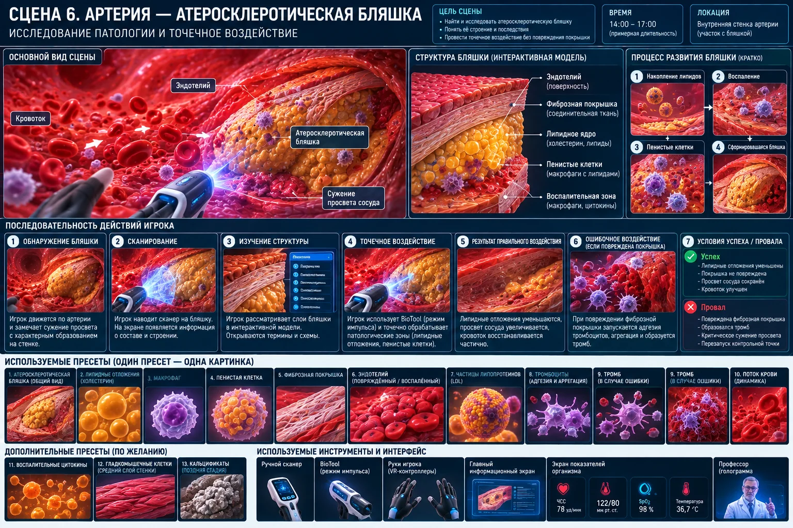

Scene 06 · 14:00–17:00
Атеросклеротическая бляшка
Ввести патологию стенки сосуда и первую точную активную механику BioTool.

Сценарная последовательность
Обнаружить нарушение потока
Сканировать бляшку
Показать состав
Открыть режим «Импульс»
Точечно снизить патологическую нагрузку
Не повредить покрышку
При ошибке — тромбоз и чекпоинт
Технические требования сцены
- Бляшка — локальный модуль на внутренней стенке тоннеля.
- Импульсы BioTool работают по ограниченным target-зонам.
- Fail-state при критическом повреждении покрышки возвращает к чекпоинту.